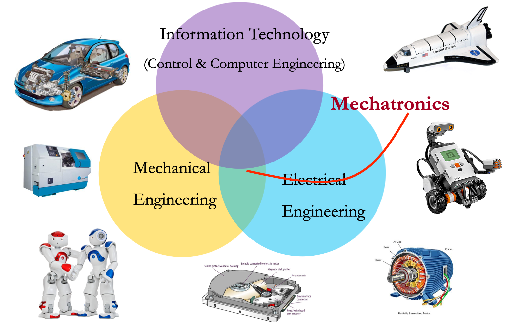

MECE 3390U: Mechatronics
Course Description
This course provides students with the tools required to design, model, analyse and control mechatronic systems; i.e. smart systems comprising electronic, mechanical, fluid and thermal components. The techniques for modelling various system components will be studied in a unified approach developing tools for the simulation of the performance of these systems. Analysis will also be made of the various components needed to design and control mechatronic systems including sensing, actuating, and I/O interfacing components.
Students who successfully complete the course should have reliably demonstrated the ability to:
- Use the basic tools required to design, model, analyze and control mechatronic systems
- Work with smart systems comprising electronic, mechanical, fluid and thermal components
- Model a wide variety of system components in a unified way
- Establish the performance of components in mechatronic systems
- Analyze various components needed to design and control mechatronic systems
- Apply the material covered in the program to the design of sensing devices and actuating devices
- Deal with I/O interfacing components in mechatronic systems
| Course Outline: | Course Outline |
| Textbooks: | [1] C. W. de Silva, Mechatronics: A Foundation Course, CRC Press, Boca Raton, FL 2010. Textbook |
| [2] W. Bolton, Mechatronics: Electronic Control Systems in Mechanical and Electrical Engineering (Sixth edition), Pearson: Edinburgh Gate, UK 2015. Textbook | |
| Note: Matlab, Matlab Simulink and Python programming skills are required in the course. | |
| Course TA(s): | William Bao (Office hours: by appointment throught email: zhibin.bao@ontariotechu.net) |
| Dylan Bender (Office hours: by appointment throught email: dylan.bender@ontariotechu.net) | |
| Jonathan Selvanathan (Office hours: by appointment throught email: Jonathan.selvanathan@ontariotechu.net) |
Time and Location
| Lectures | Section 001 | Tuesdays: 2:10 pm to 3:30 pm Fridays: 2:10 pm to 3:30 pm |
| Section 014 | Tuesdays: 11:10 am to 12:30 pm Thursdays: 11:10 to 12:30 pm |
|
| Labs | Two-hour bi-weeekly | Please chech your schedule! |
| Tutorials | One-hour weekly | Please chech your schedule! |
Course Notes
| Item | Title | Material |
|---|---|---|
| Recorded Lectures | Playlist on Youtube (updating....) | |
| Lecture 1 | Course Overview and Introduction | Slides Video |
| Lecture 2 | Basic Elements and Components | Slides Notes Video |
| Lecture 3 | Mechanical & Electrical Systems | Slides |
| Lecture 4 | Mobile Robot Kinematics | |
| Lecture 5 | Sensors (1) | |
| Lecture 6 | Sensors (2) | |
| Lecture 7 | Sensors (3) | |
| Lecture 8 | Signals and Signal Conditioning (1) | |
| Lecture 9 | Signals and Signal Conditioning (2) | |
| Lecture 10 | Digital Signals | |
Intermediate Presentation |
In-class |
March 1st, 2022 |
| Lecture 11 | Digital Logic | |
| Lecture 12 | Digital Image Processing | |
| Lecture 13 | Actuators (1) | |
| Lecture 14 | Actuators (2) | |
| Lecture 15 | Modeling of Dynamic Systems (1) | |
| Lecture 16 | Modeling of Dynamic Systems (2) | |
| Lecture 17 | System Analysis | |
| Lecture 18 | Control System Design | |
| Lecture 19 | Course Review | |
Final Presentation |
In-class |
in the last week of the class |
Labs
| Lab 1 | LED Control |
| Lab 2 | Open-Loop Control of a DC Motor System |
| Lab 3 | Closed-Loop Position Control of a DC Motor System |
| Lab 4 | Closed-Loop Speed Control of a DC Motor System |
| Lab 5 | Load Cell MATLAB Application |
Homework
| Homework 1 | Homework 1 |
| Homework 2 | |
| Homework 3 | |
| Homework 4 | |
| Homework 5 |
Tutorials
| Tutorial 1 | Tutorial 1 |